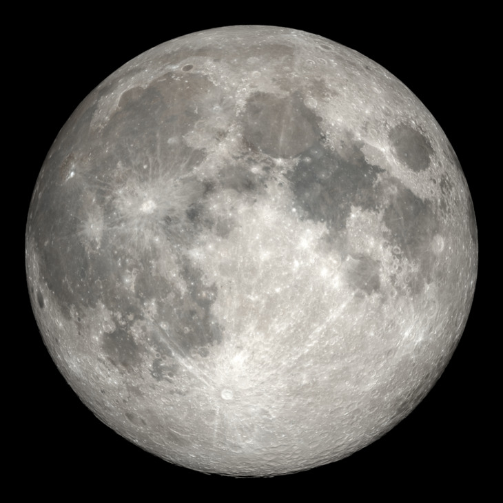

Launch watch-alongs
Big moments are better together. Share the anticipation, the countdown and the lift-off.
 Join the crew ↗
Join the crew ↗A LITTLE CURIOSITY. A LOT OF POSSIBILITY.
A home for the curious. A launchpad for the ambitious. Your space at the University of Nottingham.
Find your orbit ↗ALL DEGREES. ALL EXPERIENCE LEVELS.
Choose a marker. Follow your curiosity.
Some of us build rockets. Some write code. Some just want to watch a launch with people who get it.
We’re Nottingham’s Space Society, a branch of UKSEDS. We bring students together to design, build and explore — from engineering projects to film nights and conversations about what comes next.
You don’t need a particular degree or a head start. Just a reason to look up.
There’s a place for you here ↗Real challenges. Shared discoveries.
Explore what we’re building.
projecthelia.org

uoncres.org
Take an idea off the drawing board. Our society builds rockets and rocket engines, with opportunities to get involved in design, electronics, software and testing.
Find a project team ↗A student balloon project exploring how to sustain cells at high altitudes, with controlled pressure, temperature and UV exposure. Biology meets engineering above the clouds.
Explore Project HELIA ↗Space exploration takes more than a rocket. Get involved in the systems, spacecraft and rovers that turn an ambitious mission into a working machine.
Discover the teams ↗You can love space without building a spacecraft. Come for the films, the launch countdowns, the ideas — and the people.
Big moments are better together. Share the anticipation, the countdown and the lift-off.
A good space film. A conversation that goes off on a tangent. Find your people back on Earth.
Solve something together, share what you know, and spark someone else’s curiosity.
Our latest events and project updates live in the community.
See what’s happening ↗YOU BRING THE CURIOSITY. WE’LL BRING THE COMPANY.
Whatever you study. Whatever you know.
Your next adventure can start right here.